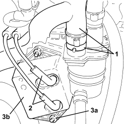

1060G70 VACUUM RESEVOIR - R.R
- Path
- Procedures > 10 ENGINE > 1060 DIESEL INJECTION SYSTEM > 1060G DIESEL INJECTION PRESSURE PUMP ELECTRONIC CONTROL > 1060G70 VACUUM RESEVOIR - R.R
- Kind
- repair procedure (removal / refitting; the operation number is the code)
- Applies to
- engines: 1.9 JTD 8v, 1.9 JTD 16v, 2.4 JTD 20v; all production periods
- Interactive page
- https://sloeber94.github.io/elrnDB-fCrm/en/#/194002179
Applies to: engines: 1.9 JTD 8v, 1.9 JTD 16v, 2.4 JTD 20v; all production periods
 Removing
Removing
 Refitting
RefittingOp. 1016A10 SOUND-PROOFING COVER - R.R
1. Loosen the band and disconnect the engine oil vapour recovery pipe from the engine oil vapour separator.
2. Disconnect the vacuum pipes from the vacuum reservoir.
3. Undo the nuts (3a) and remove the vacuum reservoir (3b).

Applies to: engines: 1.9 JTD 8v, 1.9 JTD 16v, 2.4 JTD 20v; all production periods
Refitting
Removing- Place the vacuum reservoir back in its housing and secure it using the nuts.
- Connect the vacuum pipes to the vacuum reservoir.
- Connect the oil vapour recovery pipe to the oil vapour separator and tighten the band.